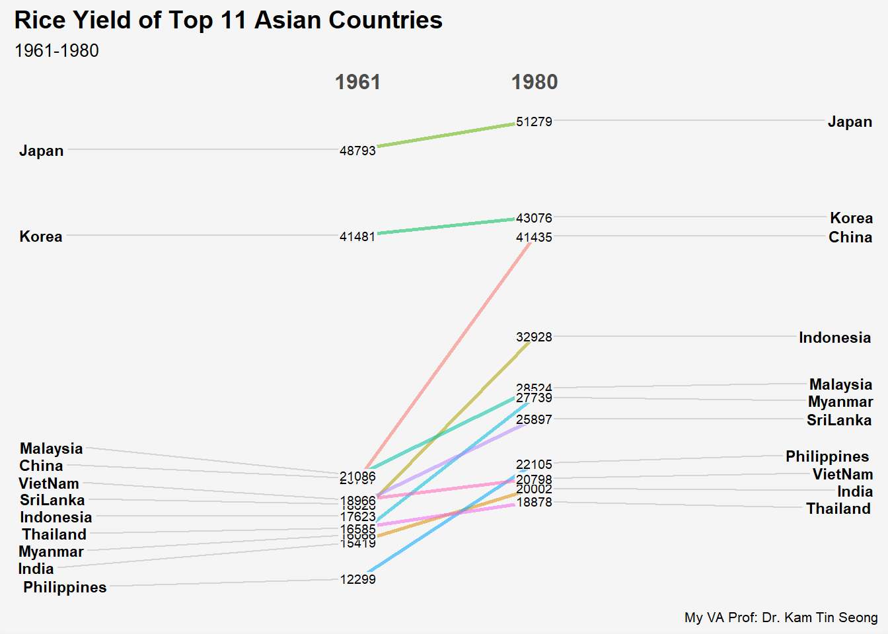
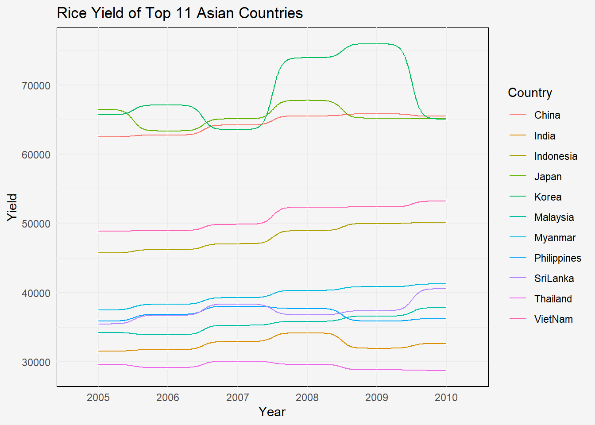

pacman::p_load(scales, viridis, lubridate,
ggthemes, gridExtra, readxl,
knitr, data.table,
CGPfunctions, ggHoriPlot,
tidyverse, ggHoriPlot)Hands-on Exercise 6: Visualising and Analysing Time-oriented Data
1 Overview
This hands-on exercise aims to plot the following data visualsations with R:
- calender heatmap by using ggplot2 functions,
- cycle plot by using ggplot2 function,
- slopegraph
- horizon chart
2 Getting Started
::: panel-tabset ## Installing & Launching R Packages
For this exercise, the scales, viridis, lubridate, ggthemes, gridExtra, readxl, knitr, data.table and tidyverse packages will be used.
3 Plotting Calendar Heatmap
Objectives for this section:
- plot a calender heatmap by using ggplot2 functions and extension,
- to write function using R programming,
- to derive specific date and time related field by using base R and lubridate packages
- to perform data preparation task by using tidyr and dplyr packages.
3.1 Step 1: The Data
For the purpose of this hands-on exercise, eventlog.csv file will be used. This data file consists of 199,999 rows of time-series cyber attack records by country.
The code chunk below is used to import eventlog.csv file into R as a data frame attacks.
attacks <- read_csv("data/eventlog.csv")3.2 Step 2: Examining the data structure
kable() can be used to review the structure of the imported data frame.
Show the code
kable(head(attacks))| timestamp | source_country | tz |
|---|---|---|
| 2015-03-12 15:59:16 | CN | Asia/Shanghai |
| 2015-03-12 16:00:48 | FR | Europe/Paris |
| 2015-03-12 16:02:26 | CN | Asia/Shanghai |
| 2015-03-12 16:02:38 | US | America/Chicago |
| 2015-03-12 16:03:22 | CN | Asia/Shanghai |
| 2015-03-12 16:03:45 | CN | Asia/Shanghai |
There are three columns, namely timestamp, source_country and tz.
- timestamp field stores date-time values in POSIXct format.
- source_country field stores the source of the attack. It is in ISO 3166-1 alpha-2 country code.
- tz field stores time zone of the source IP address.
3.3 Step 3: Data Preparation
Step 1: Deriving weekday and hour of day fields
Before we can plot the calender heatmap, two new fields namely wkday and hour need to be derived. In this step, we will write a function to perform the task.
make_hr_wkday <- function (ts, sc, tz) {
# convert each time with the appropriate timezone,
# the timezone parameter, tz, only takes a single value,
# then extract its weekdays and hour
real_times <- ymd_hms(ts,
tz = tz[1], #<< for group by tz later, simply use the first tz value of groupby
quiet = TRUE)
dt <- data.table(source_country = sc,
wkday= weekdays(real_times),
hour = hour(real_times))
return (dt)
}weekdays()is a base R function.
Step 2: Deriving the attacks tibble data frame
# convert weekday and hour into factor so they'll be ordered when plotting
wkday_levels <- c('Saturday', 'Friday',
'Thursday', 'Wednesday',
'Tuesday', 'Monday',
'Sunday')
attacks <- attacks %>%
group_by(tz) %>%
do(make_hr_wkday(.$timestamp,
.$source_country,
.$tz)) %>%
ungroup() %>%
mutate(wkday = factor(wkday, levels = wkday_levels),
hour = factor(hour, levels = 0:23)) #<< 24 hrs Explanation of the code chunk above
tzrefers to thetzcolumn of theattacksdataframe.tz[1]selects the first element of thetzcolumn within each group.- The
group_by(tz)statement groups the data based on unique values in thetzcolumn. - The
do()function is used to apply themake_hr_wkdayfunction to each group of the grouped dataframe. - Within the
make_hr_wkdayfunction,tz[1]is used to specify the time zone for the conversion of the timestamps within each group. Since each group has the same time zone value, usingtz[1]ensures that the function uses the correct time zone for each group.
By grouping the attacks dataframe by the tz column and applying the make_hr_wkday function within each group, the resulting dataframe will contain the source country, weekday, and hour columns based on the timestamp, source country, and time zone information, grouped by the unique time zones in the tz column of the attacks dataframe.
Beside extracting the necessary data into attacks data frame, mutate() of dplyr package is used to convert wkday and hour fields into factor so they’ll be ordered when plotting.
Table below shows the tidy tibble table after processing.
Show the code
kable(head(attacks))| tz | source_country | wkday | hour |
|---|---|---|---|
| Africa/Cairo | BG | Saturday | 20 |
| Africa/Cairo | TW | Sunday | 6 |
| Africa/Cairo | TW | Sunday | 8 |
| Africa/Cairo | CN | Sunday | 11 |
| Africa/Cairo | US | Sunday | 15 |
| Africa/Cairo | CA | Monday | 11 |
3.4 Step 4: Building the Calendar Heatmaps
grouped <- attacks %>%
count(wkday, hour) %>%
ungroup() %>%
na.omit()
ggplot(grouped,
aes(hour,
wkday,
fill = n)) +
geom_tile(color = 'white', #<<< border color and line size of tiles
size= 0.1) +
theme_tufte(base_family = 'Helvetica') + #<< to remove unneccessary graph features
coord_equal() + #<< asp ratio of 1:1
scale_fill_gradient(name = "# of attacks",
low = "sky blue",
high = "dark blue") +
labs(x = NULL,
y = NULL,
title = "Attacks by weekday and time of day") +
theme(axis.ticks = element_blank(),
plot.title = element_text(hjust=0.5, family = "Bold"),
axis.title.x = element_blank(),
axis.title.y = element_text(hjust=1, angle=0),
legend.title = element_text(size = 8),
legend.text = element_text(size=6),
#legend.key.size = unit(1,"line"),
plot.background = element_rect(fill = "#f5f5f5", color = "#f5f2f5"),
legend.background = element_rect(fill="#f5f5f5"),
panel.background = element_rect(fill="#f5f5f5")
)Explanation of the code chunk above
- a tibble data table called grouped is derived by aggregating the attack by wkday and hour fields.
- a new field called n is derived by using
group_by()andcount()functions. count()is use to count the number of records for each pair of wkday and hourna.omit()is used to exclude missing value.geom_tile()is used to plot tiles (grids) at each x and y position.colorandsizearguments are used to specify the border color and line size of the tiles.theme_tufte()of ggthemes package is used to remove unnecessary chart junk.coord_equal()is used to ensure the plot will have an aspect ratio of 1:1.scale_fill_gradient()function is used to creates a two colour gradient (low-high).
3.5 Building Multiple Calendar Heatmaps
Step 1: Deriving attack by country object
In order to identify the top 4 countries with the highest number of attacks, you are required to do the followings:
- count the number of attacks by country,
- calculate the percent of attackes by country, and
- save the results in a tibble data frame.
attacks_by_country <- count(attacks, source_country) %>% #<< Count the observations of a country
mutate(percent = percent(n/sum(n))) %>%
arrange(desc(n)) #<< arranged from largest to smallest count of attacksStep 2: Preparing the tidy data frame
In this step, you are required to extract the attack records of the top 4 countries from attacks data frame and save the data in a new tibble data frame (i.e. top4_attacks).
First, prepare vector of top 4 country names:
top4 <- attacks_by_country$source_country[1:4] #<< Top 4 countries
summary(top4) Length Class Mode
4 character character top4[1] "CN" "US" "KR" "NL"We can achieve the same thing using top_n():
top4 <- attacks_by_country %>% top_n(4, wt= n) %>% pull(source_country)Next, create top4_attacks dataframe by using ‘top4’ list to filter ‘attacks’ dataframe.
This is more reproducible than manually listing the countries to filter, eg filter(source_country %in% c('CN', 'US', 'KR', 'NL')).
top4_attacks <- attacks %>%
filter(source_country %in% top4) %>%
count(source_country, wkday,hour) %>%
ungroup() %>%
mutate(source_country = factor(
source_country, levels = top4)) %>%
na.omit()‘top4_attacks’ dataframe is similar to ‘grouped’ dataframe, except that it has one more column called ‘source_country’. This additional column will be useful for faceting later.
Step 3: Plotting Multiple Calendar Heatmaps using ggplot2 package.
ggplot(top4_attacks,
aes(hour,
wkday,
fill = n)) +
geom_tile(color = "white",
size = 0.1) +
theme_tufte(base_family = "Helvetica") +
coord_equal() +
scale_fill_gradient(name = "Number of Attacks",
low = "sky blue",
high = "dark blue") +
facet_wrap(~source_country, ncol = 2) +
labs(x = NULL, y = NULL,
title = "Attacks on top 4 countries by weekday and time of day") +
theme(axis.ticks = element_blank(),
axis.text.x = element_text(size = 7),
plot.title = element_text(hjust = 0.5),
legend.title = element_text(size = 8),
legend.text = element_text(size = 6),
legend.position = "bottom",
plot.background = element_rect(fill = "#f5f5f5", color = "#f5f2f5"),
legend.background = element_rect(fill="#f5f5f5"),
panel.background = element_rect(fill="#f5f5f5"),
panel.border = element_blank(),
)4 Plotting Cycle Plot
In this section, we learn how to plot a cycle plot showing the time-series patterns and trend of visitor arrivals from Vietnam programmatically by using ggplot2 functions.
4.1 Step 1: Data Import
The dataset arrivals_by_air.xlsx will be used. The code chunk below imports arrivals_by_air.xlsx by using read_excel() of readxl package and save it as a tibble data frame called air.
air <- read_excel("data/arrivals_by_air.xlsx")
air %>%
head(5) %>%
kable()| Month-Year | Republic of South Africa | Canada | USA | Bangladesh | Brunei | China | Hong Kong SAR (China) | India | Indonesia | Japan | South Korea | Kuwait | Malaysia | Myanmar | Pakistan | Philippines | Saudi Arabia | Sri Lanka | Taiwan | Thailand | United Arab Emirates | Vietnam | Belgium & Luxembourg | CIS | Finland | France | Germany | Ireland | Italy | Netherlands | Spain | Switzerland | United Kingdom | Australia | New Zealand |
|---|---|---|---|---|---|---|---|---|---|---|---|---|---|---|---|---|---|---|---|---|---|---|---|---|---|---|---|---|---|---|---|---|---|---|---|
| 2000-01-01 | 3291 | 5545 | 25906 | 2883 | 3749 | 33895 | 13692 | 19235 | 65151 | 59288 | 21457 | 507 | 27472 | 1177 | 2150 | 8404 | 1312 | 3922 | 15766 | 12048 | 1318 | 1527 | 1434 | 2703 | 1634 | 4752 | 12739 | 1292 | 3544 | 4962 | 925 | 3731 | 28986 | 34616 | 5034 |
| 2000-02-01 | 2357 | 6120 | 28262 | 2469 | 3236 | 34344 | 19870 | 18975 | 37105 | 58188 | 19634 | 199 | 29084 | 1161 | 2496 | 9128 | 623 | 3988 | 24861 | 12745 | 899 | 2269 | 1596 | 1182 | 1297 | 6391 | 13093 | 1200 | 2897 | 5054 | 747 | 3980 | 35148 | 26030 | 3938 |
| 2000-03-01 | 4036 | 6255 | 30439 | 2904 | 3342 | 27053 | 17086 | 21049 | 44205 | 74426 | 20719 | 386 | 30504 | 1355 | 2429 | 11691 | 1578 | 4259 | 18767 | 16971 | 1474 | 2034 | 1548 | 1088 | 1220 | 5528 | 13645 | 1368 | 2717 | 4950 | 935 | 3576 | 36117 | 31119 | 4668 |
| 2000-04-01 | 4241 | 4521 | 25378 | 2843 | 5117 | 30464 | 22346 | 26160 | 45480 | 49985 | 17489 | 221 | 34478 | 1593 | 2711 | 14141 | 705 | 6579 | 22735 | 20397 | 1284 | 2420 | 1592 | 1012 | 1208 | 5544 | 13366 | 1345 | 2512 | 4149 | 941 | 3850 | 33792 | 34824 | 6890 |
| 2000-05-01 | 2841 | 3914 | 26163 | 2793 | 4152 | 30775 | 16357 | 35869 | 38350 | 48937 | 19398 | 164 | 34795 | 1397 | 2594 | 13305 | 679 | 4625 | 18399 | 15769 | 1042 | 1833 | 1167 | 660 | 743 | 4225 | 10878 | 1067 | 2205 | 3643 | 764 | 3025 | 23377 | 33139 | 7006 |
Show the code
glimpse(air)Rows: 240
Columns: 36
$ `Month-Year` <dttm> 2000-01-01, 2000-02-01, 2000-03-01, 2000-0…
$ `Republic of South Africa` <dbl> 3291, 2357, 4036, 4241, 2841, 2776, 3728, 2…
$ Canada <dbl> 5545, 6120, 6255, 4521, 3914, 3487, 4238, 4…
$ USA <dbl> 25906, 28262, 30439, 25378, 26163, 28179, 2…
$ Bangladesh <dbl> 2883, 2469, 2904, 2843, 2793, 3146, 3489, 3…
$ Brunei <dbl> 3749, 3236, 3342, 5117, 4152, 5018, 5026, 6…
$ China <dbl> 33895, 34344, 27053, 30464, 30775, 26720, 3…
$ `Hong Kong SAR (China)` <dbl> 13692, 19870, 17086, 22346, 16357, 18133, 2…
$ India <dbl> 19235, 18975, 21049, 26160, 35869, 31314, 2…
$ Indonesia <dbl> 65151, 37105, 44205, 45480, 38350, 47982, 5…
$ Japan <dbl> 59288, 58188, 74426, 49985, 48937, 53798, 6…
$ `South Korea` <dbl> 21457, 19634, 20719, 17489, 19398, 17522, 2…
$ Kuwait <dbl> 507, 199, 386, 221, 164, 440, 1943, 2694, 4…
$ Malaysia <dbl> 27472, 29084, 30504, 34478, 34795, 34660, 2…
$ Myanmar <dbl> 1177, 1161, 1355, 1593, 1397, 1715, 1354, 1…
$ Pakistan <dbl> 2150, 2496, 2429, 2711, 2594, 2924, 4001, 3…
$ Philippines <dbl> 8404, 9128, 11691, 14141, 13305, 10555, 968…
$ `Saudi Arabia` <dbl> 1312, 623, 1578, 705, 679, 2749, 5748, 4012…
$ `Sri Lanka` <dbl> 3922, 3988, 4259, 6579, 4625, 4740, 4764, 5…
$ Taiwan <dbl> 15766, 24861, 18767, 22735, 18399, 21042, 2…
$ Thailand <dbl> 12048, 12745, 16971, 20397, 15769, 17217, 1…
$ `United Arab Emirates` <dbl> 1318, 899, 1474, 1284, 1042, 1545, 3641, 33…
$ Vietnam <dbl> 1527, 2269, 2034, 2420, 1833, 2480, 2221, 2…
$ `Belgium & Luxembourg` <dbl> 1434, 1596, 1548, 1592, 1167, 1170, 1912, 1…
$ CIS <dbl> 2703, 1182, 1088, 1012, 660, 712, 911, 864,…
$ Finland <dbl> 1634, 1297, 1220, 1208, 743, 982, 680, 1029…
$ France <dbl> 4752, 6391, 5528, 5544, 4225, 4047, 5769, 6…
$ Germany <dbl> 12739, 13093, 13645, 13366, 10878, 9054, 10…
$ Ireland <dbl> 1292, 1200, 1368, 1345, 1067, 1363, 1348, 1…
$ Italy <dbl> 3544, 2897, 2717, 2512, 2205, 2196, 2988, 6…
$ Netherlands <dbl> 4962, 5054, 4950, 4149, 3643, 3544, 5969, 5…
$ Spain <dbl> 925, 747, 935, 941, 764, 855, 1163, 1669, 1…
$ Switzerland <dbl> 3731, 3980, 3576, 3850, 3025, 2580, 3656, 2…
$ `United Kingdom` <dbl> 28986, 35148, 36117, 33792, 23377, 21769, 2…
$ Australia <dbl> 34616, 26030, 31119, 34824, 33139, 35731, 4…
$ `New Zealand` <dbl> 5034, 3938, 4668, 6890, 7006, 7634, 9502, 6…Note that Month-year column is detected as date-time format in R.
4.2 Step 2: Deriving month and year fields
Next, two new fields called month and year are derived from Month-Year field.
Show the code
air$month <- factor(month(air$`Month-Year`), # extract month
levels = 1:12, #<< 12 months
ordered= TRUE)
air$year <- year(ymd(air$`Month-Year`)) # extract year4.3 Step 3: Extracting the target country
Next, the code chunk below is use to create dataframe containing the arrival data for Vietnam from 2010 onwards by selecting columns ‘Vietnam’, ’ month’ and ‘year’ from the air dataframe.
Show the code
Vietnam <- air %>%
select(`Vietnam`,
month,
year) %>%
filter(year >= 2010)4.4 Step 4: Computing year average arrivals by month
The code chunk below uses group_by() and summarise() of dplyr to compute year average arrivals by month for all the years in Vietnam dataframe.
Show the code
hline.data <- Vietnam %>%
group_by(month) %>%
summarise(avgvalue = mean(`Vietnam`))4.5 Step 5: Plotting the cycle plot
The code chunk below is used to plot the cycle plot.
Show the code
ggplot() +
geom_line(data=Vietnam,
aes(x=factor(year),
y=`Vietnam`,
group=month),
colour="black") +
geom_hline(aes(yintercept=avgvalue), #<< geom_hline does not require group=month for facet?
data=hline.data,
linetype=6,
colour="red",
size=0.5) +
facet_grid(~month) +
labs(axis.text.x = element_blank(),
title = "Visitor arrivals from Vietnam by air, Jan 2010-Dec 2019") +
ylab("No. of Visitors") +
theme(axis.text.x = element_blank(),
axis.ticks.x = element_blank(),
axis.title.x = element_blank(),
plot.title = element_text(hjust = 0.5),
legend.title = element_text(size = 8),
legend.text = element_text(size = 6),
plot.background = element_rect(fill = "#f5f5f5", color = "#f5f2f5"),
legend.background = element_rect(fill="#f5f5f5"),
panel.background = element_rect(fill="#f5f5f5")
) 5 Plotting Slopegraph
In this section, we learn how to plot a slopegraph with R.
Ensure CGPfunctions is installed and loaded in R. For more reference materials, refer to Using newggslopegraph and newggslopegraph().
5.1 Step 1: Data Import
Import the rice data set into R environment by using the code chunk below.
rice <- read_csv("data/rice.csv")Notice that ‘year’ column is in the wrong format of number. We should convert it to factor instead.
5.2 Step 2: Plotting the slopegraph
Next, code chunk below will be used to plot a basic slopegraph as shown below.
Key arguments include: - Times: - Measurement: Where the highest values are at the top of the graph. - Grouping:
Since slopegraph contains information only for two years, we will filter data in 1960 and 1980 only.
factor() is used convert the value type of Year field from numeric to factor.
Show the code
rice %>%
mutate(Year = factor(Year)) %>%
filter(Year %in% c(1961, 1980)) %>%
newggslopegraph(Times = Year,
Measurement = Yield,
Grouping = Country,
Title = "Rice Yield of Top 11 Asian Counties",
SubTitle = "1961-1980",
Caption = "My VA Prof: Dr. Kam Tin Seong",
DataLabelFillColor = "#f5f5f5",) +
theme(
plot.background = element_rect(fill = "#f5f5f5", color = "#f5f2f5"),
panel.background = element_rect(fill="#f5f5f5")
) 
5.3 Highlighting a country
LineColor is simply a character vector that you can fill any way you choose.
Show the code
rice %>%
mutate(Year = factor(Year)) %>%
filter(Year %in% c(2005, 2006, 2007, 2008, 2009, 2010)) %>%
newggslopegraph(Year, Yield, Country,
Title = "Rice Yield of Top 11 Asian Counties",
SubTitle = "2005 to 2010",
Caption = NULL,
LineColor = c("#c7c8cc", "#c7c8cc", "#c7c8cc", "#c7c8cc","red","#c7c8cc","#c7c8cc","#c7c8cc","#c7c8cc","#c7c8cc"),
DataLabelFillColor = "#f5f5f5",) +
theme(
plot.background = element_rect(fill = "#f5f5f5", color = "#f5f2f5"),
panel.background = element_rect(fill="#f5f5f5")
) Assigning by country name is much clearer!
Show the code
rice %>%
mutate(Year = factor(Year)) %>%
filter(Year %in% c(2005, 2006, 2007, 2008, 2009, 2010)) %>%
newggslopegraph(Year, Yield, Country,
Title = "Rice Yield of Top 11 Asian Counties",
SubTitle = "2005 to 2010",
Caption = NULL,
LineColor = c("Korea" = "#e0218a", "Thailand" = "#FFBC2F"),
DataLabelFillColor = "#f5f5f5",) +
theme(
plot.background = element_rect(fill = "#f5f5f5", color = "#f5f2f5"),
panel.background = element_rect(fill="#f5f5f5")
) 6 BumpCharts in R
Another popular visualisation is the bump chart, which is a type of line chart which shows changes in rankings over time.
rice %>%
mutate(Year = factor(Year)) %>%
filter(Year %in% c(2005, 2006, 2007, 2008, 2009, 2010)) %>%
ggplot(aes(x = Year,
y = Yield,
color = Country))+
geom_point(color = "#FFFFFF", size = 1) +
ggbump::geom_bump(mapping=aes(x = Year,
y = Yield,
group = Country
))+
labs(title = "Rice Yield of Top 11 Asian Counties") +
theme_minimal()+
theme(
plot.background = element_rect(fill = "#f5f5f5", color = "#f5f2f5"),
panel.background = element_rect(fill="#f5f5f5"))
7 Horizon Chart (WIP)
rice %>%
filter(Year %in% c(2005, 2006, 2007, 2008, 2009, 2010)) %>%
ggplot() +
geom_horizon(
aes(x = factor(Year),
y = Yield,
fill= ..Cutpoints..),
origin = "midpoint",
horizonscale = 6
)+
facet_grid(Country~.) +
theme_few() +
scale_fill_hcl(palette = 'RdBu') +
labs(
title = "Rice Yield of Top 11 Asian Counties (From 2005 to 2010)"
) +
theme(
panel.spacing.y = unit(0, "lines"),
strip.text.y = element_text(size = 5, angle = 0, hjust = 0),
legend.position = "none",
axis.text.y = element_blank(),
axis.text.x = element_text(size = 7, angle = 0),
axis.title.y = element_blank(),
axis.title.x = element_blank(),
axis.ticks.y = element_blank(),
panel.border = element_blank(),
panel.background = element_rect(fill = "#f5f5f5", color = "#f5f5f5"),
plot.background = element_rect(fill = "#f5f5f5", color = "#f5f5f5"))